รายงานฉบับนี้เป็นส่วนหนึ่งของวิชา 89022167 Database Management จัดทำขึ้นเพื่อนำเสนอโครงงาน CLOZEE ซึ่งเป็นเว็บแอปพลิเคชันสำหรับซื้อขายเสื้อผ้ามือหนึ่งและมือสอง โดยมีกลุ่มเป้าหมายเป็นนิสิตมหาวิทยาลัยบูรพาและผู้คนในพื้นที่บางแสน
เนื้อหาในรายงานครอบคลุมที่มาของปัญหา ความต้องการของระบบ การออกแบบฐานข้อมูล สถาปัตยกรรม การทำ CRUD การเข้าสู่ระบบ ความปลอดภัย การใช้คำสั่ง SQL JOIN ผลการทดสอบ และข้อจำกัดของระบบ โดยตัวเลขผลทดสอบทั้งหมดมาจากการรันจริงและมีหลักฐานเก็บไว้ใน GitHub Repository
หวังว่ารายงานฉบับนี้จะช่วยให้ผู้อ่านเข้าใจการนำความรู้ด้านฐานข้อมูลเชิงสัมพันธ์ไปใช้กับเว็บแอปพลิเคชันจริง
CLOZEE เป็นเว็บแอปพลิเคชันสำหรับซื้อขายเสื้อผ้ามือหนึ่งและมือสองในพื้นที่ ผู้ใช้หนึ่งบัญชีสามารถเป็นทั้งผู้ซื้อและเจ้าของร้านได้หนึ่งร้าน ผู้ขายลงสินค้าพร้อมไซซ์ ราคา สต็อก และรูปภาพ ส่วนผู้ซื้อค้นหาสินค้า สั่งซื้อจากร้านเดียวต่อหนึ่งคำสั่งซื้อ เลือกนัดรับหรือจัดส่งในพื้นที่ และติดตามสถานะคำสั่งซื้อได้
ระบบพัฒนาด้วย PHP และ MySQL ติดตั้งใช้งานจริงบนเซิร์ฟเวอร์ Angsila ของคณะ และเก็บซอร์สโค้ดไว้บน GitHub ผู้ซื้อและผู้ขายตกลงเรื่องการชำระเงินกันโดยตรง เพราะระบบบันทึกเฉพาะคำสั่งซื้อและสถานะ ไม่ได้รับเงินออนไลน์
ตลาดสินค้ามือสองในประเทศไทยมีแนวโน้มเติบโต โดยผู้บริหารร้านแฟชั่นมือสอง Bagnifique ประเมินกับหนังสือพิมพ์ The Nation เมื่อเดือนกุมภาพันธ์ 2568 ว่าตลาดมีมูลค่าราว 40,000 ล้านบาทในปีก่อนหน้า และมีคนรุ่นใหม่เป็นแรงขับเคลื่อนสำคัญ ตัวเลขนี้เป็นการประเมินของผู้ประกอบการ ไม่ใช่สถิติทางการ แต่ก็สะท้อนว่าเสื้อผ้ามือสองเป็นตลาดที่น่าสนใจ
ในระดับพื้นที่ นิสิตมหาวิทยาลัยบูรพาและผู้คนในบางแสนอยู่ใกล้กันจนสามารถนัดรับสินค้าได้สะดวก โครงงานนี้จึงตั้งคำถามว่า หากมีเว็บไซต์เฉพาะพื้นที่ที่รวมข้อมูลเสื้อผ้าไว้ในที่เดียว การซื้อขายจะง่ายขึ้นหรือไม่
ปัญหาต่อไปนี้เป็นสมมติฐานของโครงงาน ยังไม่ได้สำรวจหรือสัมภาษณ์กลุ่มเป้าหมายจริง
ตารางที่ 1 ปัญหาและแนวทางที่ระบบเข้าไปแก้ไข
| ปัญหา | แนวทางของ CLOZEE |
|---|---|
| ข้อมูลกระจัดกระจาย | รวมสินค้าไว้ในหน้าเดียว ค้นหาและกรองตามสภาพ หมวดหมู่ และไซซ์ได้ |
| ต้องถามข้อมูลซ้ำ | หน้าสินค้าแสดงไซซ์ ราคา รูป รอบอก ความยาว และตำหนิ พร้อมแชทกับร้าน |
| ผู้ขายไม่มีระบบจัดการ | มีหน้าจัดการร้าน สินค้า สต็อก และคำสั่งซื้อ |
| เสี่ยงขายสินค้าซ้ำ | ตัดสต็อกใน Transaction พร้อมล็อกแถวข้อมูล |
ผู้ซื้อคือนิสิตมหาวิทยาลัยบูรพาและผู้คนในบางแสน ส่วนผู้ขายคือนิสิต ผู้ขายเสื้อผ้ามือสอง และร้านเสื้อผ้าขนาดเล็กในพื้นที่ ระบบไม่ได้ตรวจสถานะการเป็นนิสิต
เมื่อผู้ใช้เปิดหน้าเว็บ เบราว์เซอร์จะส่งคำขอไปยัง Apache จากนั้น PHP จะทำงานที่เซิร์ฟเวอร์ ส่งคำสั่ง SQL ไปยัง MySQL แล้วสร้าง HTML กลับมาแสดงผล ส่วน phpMyAdmin เป็นเพียงเครื่องมือจัดการฐานข้อมูล ไม่ใช่ตัวฐานข้อมูลเอง
ฐานข้อมูลเชิงสัมพันธ์เก็บข้อมูลเป็นตาราง Primary Key ใช้ระบุแต่ละแถวไม่ให้ซ้ำ ส่วน Foreign Key ใช้เชื่อมความสัมพันธ์ระหว่างตาราง โครงงานนี้ยังใช้ UNIQUE และ CHECK เพื่อให้ฐานข้อมูลช่วยป้องกันข้อมูลที่ไม่ถูกต้อง
CRUD คือการทำงานพื้นฐานกับข้อมูล 4 อย่าง ได้แก่ เพิ่ม อ่าน แก้ไข และลบ ซึ่งตรงกับคำสั่ง INSERT, SELECT, UPDATE และ DELETE ส่วน Prepared Statement แยกคำสั่ง SQL ออกจากค่าที่ผู้ใช้กรอกเพื่อป้องกัน SQL Injection สไลด์รายวิชาสอนด้วย mysqli แต่โครงงานนี้ใช้ PDO ซึ่งมีหลักการเดียวกัน
JOIN ใช้รวมข้อมูลจากหลายตาราง INNER JOIN คืนเฉพาะแถวที่จับคู่ได้ ส่วน LEFT JOIN เก็บทุกแถวของตารางซ้ายไว้ แม้ไม่มีข้อมูลที่จับคู่ได้ในตารางขวา ความสัมพันธ์แบบหนึ่งต่อหลายทำให้จำนวนแถวเพิ่มขึ้นได้ จึงต้องระวังเมื่อนับหรือรวมยอดหลัง JOIN
Authentication คือการยืนยันว่าผู้ใช้เป็นใคร ส่วน Authorization คือการตรวจว่าผู้ใช้คนนั้นมีสิทธิ์ทำสิ่งใด PHP Session เก็บสถานะการเข้าสู่ระบบไว้ที่เซิร์ฟเวอร์ และให้เบราว์เซอร์เก็บเพียง Session ID ใน Cookie
Transaction ทำให้คำสั่งหลายคำสั่งสำเร็จพร้อมกันทั้งหมดหรือยกเลิกทั้งหมด ส่วนคำสั่ง SELECT ... FOR UPDATE ล็อกแถวไว้จนกว่า Transaction จะจบ จึงป้องกันไม่ให้สองคำขอตัดสต็อกแถวเดียวกันพร้อมกัน
ตารางที่ 2 ความต้องการด้านการทำงานและการดำเนินการในระบบ
| รหัส | ความต้องการ | การทำงานในระบบ |
|---|---|---|
| FR-01/02 | สมัคร เข้าสู่ระบบ และออกจากระบบ | เก็บรหัสผ่านแบบ Hash ใช้ Session และออกจากระบบด้วย POST พร้อม CSRF Token |
| FR-03 | จัดการร้านของตนเอง | สร้างและแก้ไขได้หนึ่งร้านต่อบัญชี และลบได้เมื่อยังไม่มีประวัติคำสั่งซื้อ |
| FR-04/05 | จัดการสินค้า ไซซ์ ราคา และสต็อก | เพิ่ม อ่าน แก้ไข ปิดขาย และลบสินค้าที่ไม่มีประวัติการซื้อ |
| FR-06/07 | ค้นหา กรอง และดูรายละเอียด | กรองตามสภาพ หมวดหมู่ ไซซ์ และคำค้นหา |
| FR-08/09 | สั่งซื้อและเลือกวิธีรับสินค้า | สั่งได้ร้านเดียวต่อคำสั่งซื้อ เลือกนัดรับหรือจัดส่ง |
| FR-10/11 | สถานะและประวัติคำสั่งซื้อ | ร้านเปลี่ยนสถานะตามลำดับ ผู้ซื้อดูประวัติของตนเองได้ |
| FR-12 | ตรวจสิทธิ์ทุกครั้งที่แก้ไขข้อมูล | ใช้ผู้ใช้จาก Session ไม่เชื่อรหัสที่ส่งมาจากฟอร์ม |
| FR-13 | แชทระหว่างผู้ซื้อกับร้าน | ทำแล้ว เปิดจากไอคอนมุมขวาล่าง ข้อความใหม่ขึ้นเอง เรียงแชทใหม่สุดหรือเก่าสุดได้ และอ่านหรือส่งได้เฉพาะคู่สนทนา |
| FR-14 | รูปสินค้าหลายรูป | ทำแล้ว ไม่เกิน 4 รูปต่อสินค้า |
| FR-15 | สรุปยอดขาย | ยังไม่ได้ทำ เป็นงานเสริมที่เลื่อนได้ |
ตารางที่ 3 ความต้องการที่ไม่ใช่ด้านการทำงาน
| ด้าน | ข้อกำหนด |
|---|---|
| ความปลอดภัย | Hash รหัสผ่าน, Prepared Statement, Escape ข้อมูล, CSRF Token และตรวจสิทธิ์ |
| ความถูกต้องของข้อมูล | Foreign Key, UNIQUE, CHECK และ Transaction |
| การใช้งาน | รองรับทั้งคอมพิวเตอร์และมือถือ และแสดงข้อผิดพลาดที่เข้าใจง่าย |
| การดูแลโค้ด | ใช้ Git/GitHub มี README และไม่เก็บรหัสผ่านใน Repository |
ผู้เยี่ยมชมค้นหาสินค้าและสมัครสมาชิกได้ เมื่อเข้าสู่ระบบแล้วจึงสั่งซื้อ ดูประวัติ และแชทกับร้านได้ ผู้ขายจัดการร้าน สินค้า และคำสั่งซื้อของร้านตนเอง บทบาทผู้ซื้อและผู้ขายขึ้นกับบริบทของบัญชีเดียวกัน ดังภาพที่ 1
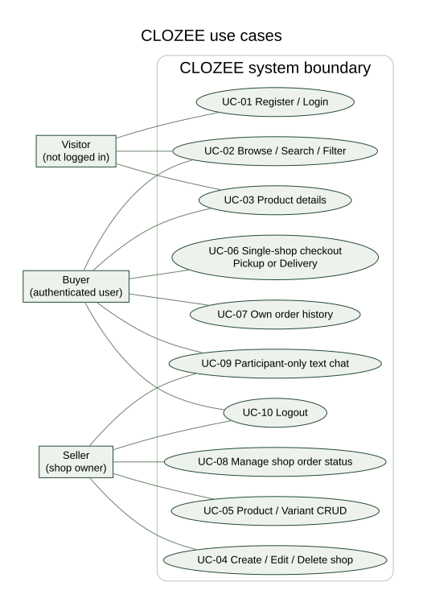
ตัวอย่างขั้นตอนการสั่งซื้อคือ ผู้ซื้อเข้าสู่ระบบ เลือกไซซ์และจำนวน เพิ่มลงตะกร้า แล้วเลือกนัดรับหรือจัดส่ง จากนั้นเซิร์ฟเวอร์จะตรวจราคา สต็อก และสิทธิ์อีกครั้ง ล็อกข้อมูล สร้างคำสั่งซื้อ และตัดสต็อกใน Transaction เดียวกัน หากสต็อกไม่พอหรือสินค้าปนหลายร้าน ระบบจะยกเลิกทั้งชุด
ฐานข้อมูลมี 11 ตาราง 89 คอลัมน์ 15 Foreign Keys และ 9 CHECK Constraints ใช้ InnoDB และ utf8mb4 ดังภาพที่ 2 และตารางที่ 4 ส่วนรายละเอียดทุกคอลัมน์อยู่ในภาคผนวก
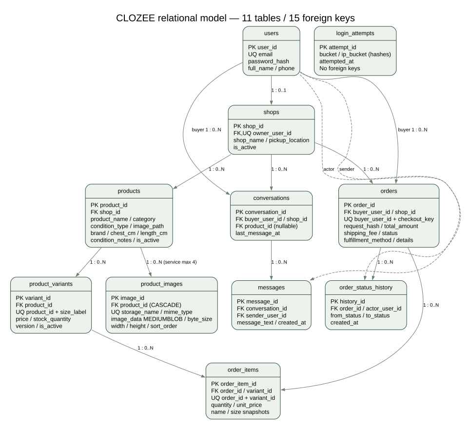
ตารางที่ 4 ตารางในฐานข้อมูลและหน้าที่
| ตาราง | หน้าที่ |
|---|---|
| users | บัญชีผู้ใช้และรหัสผ่านแบบ Hash |
| shops | ร้านค้า ผูกกับเจ้าของแบบหนึ่งบัญชีต่อหนึ่งร้าน |
| products | ข้อมูลสินค้าและรายละเอียดเสื้อผ้า |
| product_variants | ไซซ์ ราคา และสต็อกของสินค้า |
| product_images | รูปสินค้าที่เก็บเป็น MEDIUMBLOB |
| orders | คำสั่งซื้อ วิธีรับสินค้า ยอดรวม และสถานะ |
| order_items | รายการสินค้าในคำสั่งซื้อ พร้อมชื่อ ไซซ์ และราคา ณ วันที่สั่ง |
| order_status_history | ประวัติการเปลี่ยนสถานะคำสั่งซื้อ |
| conversations | ห้องสนทนาระหว่างผู้ซื้อกับร้าน |
| messages | ข้อความในห้องสนทนา |
| login_attempts | บันทึกการเข้าสู่ระบบผิดเพื่อจำกัดการลองซ้ำ |
ความสัมพันธ์สำคัญคือ หนึ่งผู้ใช้มีร้านได้ไม่เกินหนึ่งร้าน หนึ่งร้านมีได้หลายสินค้าและหลายคำสั่งซื้อ หนึ่งสินค้ามีได้หลายไซซ์และหลายรูป และหนึ่งคำสั่งซื้อมีได้หลายรายการ ตาราง login_attempts ไม่ผูก Foreign Key กับผู้ใช้ เพราะอีเมลที่กรอกผิดอาจไม่ใช่บัญชีจริง
เบราว์เซอร์รับ HTML, CSS และ JavaScript จาก PHP ที่ทำงานหลัง Apache ทุกคำขอที่แก้ไขข้อมูลต้องผ่าน Session, CSRF Token และ Service ที่ตรวจความเป็นเจ้าของ ก่อนใช้ PDO ติดต่อกับ MySQL ดังภาพที่ 3
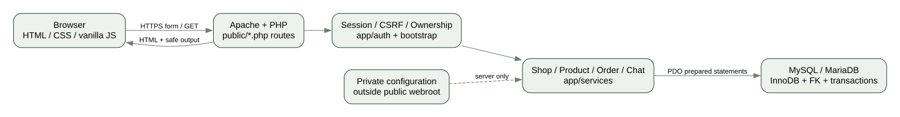
โค้ดแบ่งเป็นโฟลเดอร์ public/ สำหรับหน้าเว็บที่เปิดได้จากภายนอก app/ สำหรับ Service, การตรวจสิทธิ์ และ Template database/ สำหรับ Schema และคำสั่ง SQL scripts/ สำหรับเครื่องมือติดตั้ง และ docs/ สำหรับรายงานและหลักฐาน ไฟล์ตั้งค่าที่มีรหัสผ่านอยู่นอกโฟลเดอร์สาธารณะ
ตารางที่ 5 เทคโนโลยีที่ใช้
| ส่วน | เทคโนโลยี |
|---|---|
| ฝั่งเซิร์ฟเวอร์ | PHP และ PDO |
| ฐานข้อมูล | MySQL 8.0.46 บน Angsila |
| หน้าเว็บ | HTML, CSS และ JavaScript |
| เว็บเซิร์ฟเวอร์ | Apache บน Angsila |
| เครื่องมือจัดการ | phpMyAdmin และ FileZilla |
| การจัดการเวอร์ชัน | Git และ GitHub |
| การทดสอบ | สคริปต์ทดสอบ PHP, Playwright และ GitHub Actions |
ผู้ใช้เปิดดูและค้นหาสินค้าได้โดยไม่ต้องเข้าสู่ระบบ หน้าเว็บปรับตามขนาดหน้าจอทั้งคอมพิวเตอร์และมือถือ ดังภาพที่ 4 และภาพที่ 5 ภาพสินค้าในรายงานเป็นภาพสาธิต ไม่ใช่สินค้าหรือลูกค้าจริง
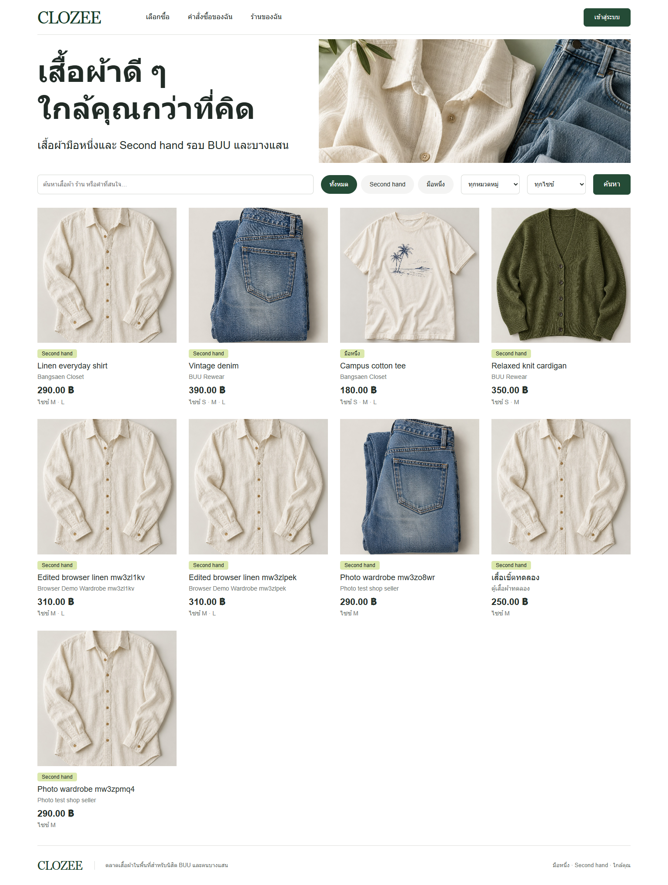
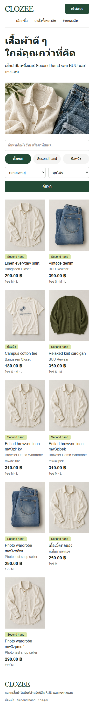
ผู้ขายต้องเข้าสู่ระบบก่อนจึงจะจัดการสินค้าได้ ดังภาพที่ 6 และเพิ่มสินค้าพร้อมหลายไซซ์ ราคา และสต็อกผ่านแบบฟอร์มในภาพที่ 7 เมื่อเพิ่มหรือแก้ไขสินค้าหรือร้านสำเร็จ ระบบจะแสดงแถบแจ้งเตือนสีเขียวเด่นบนหน้าจอพร้อมชื่อรายการ ระหว่างบันทึกปุ่มจะขึ้นว่า “กำลังบันทึก…” เพื่อกันการกดซ้ำ
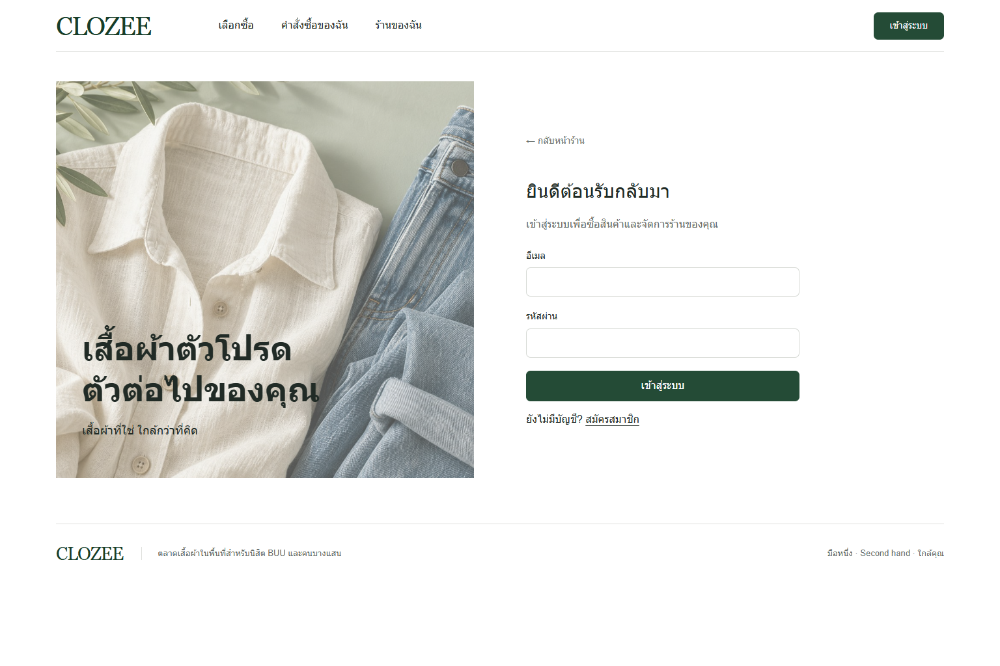
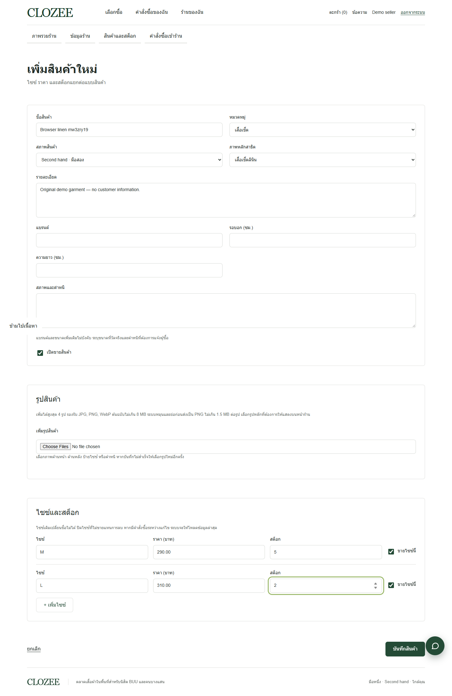
ผู้ซื้อเลือกนัดรับหรือจัดส่งแล้วกรอกรายละเอียด ดังภาพที่ 8 จากนั้นร้านเปลี่ยนสถานะตามลำดับที่ระบบอนุญาต ดังภาพที่ 9 และภาพที่ 10 ข้อมูลนัดรับในภาพเป็นข้อมูลสมมติ
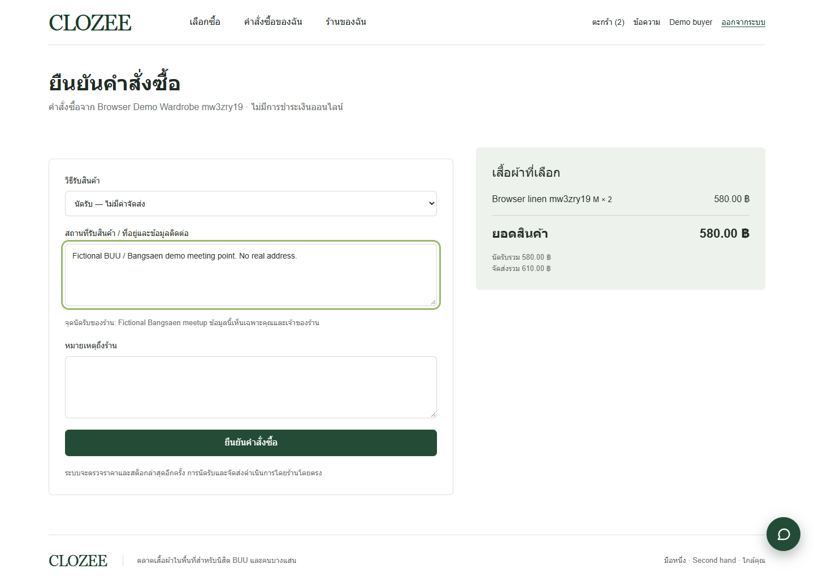
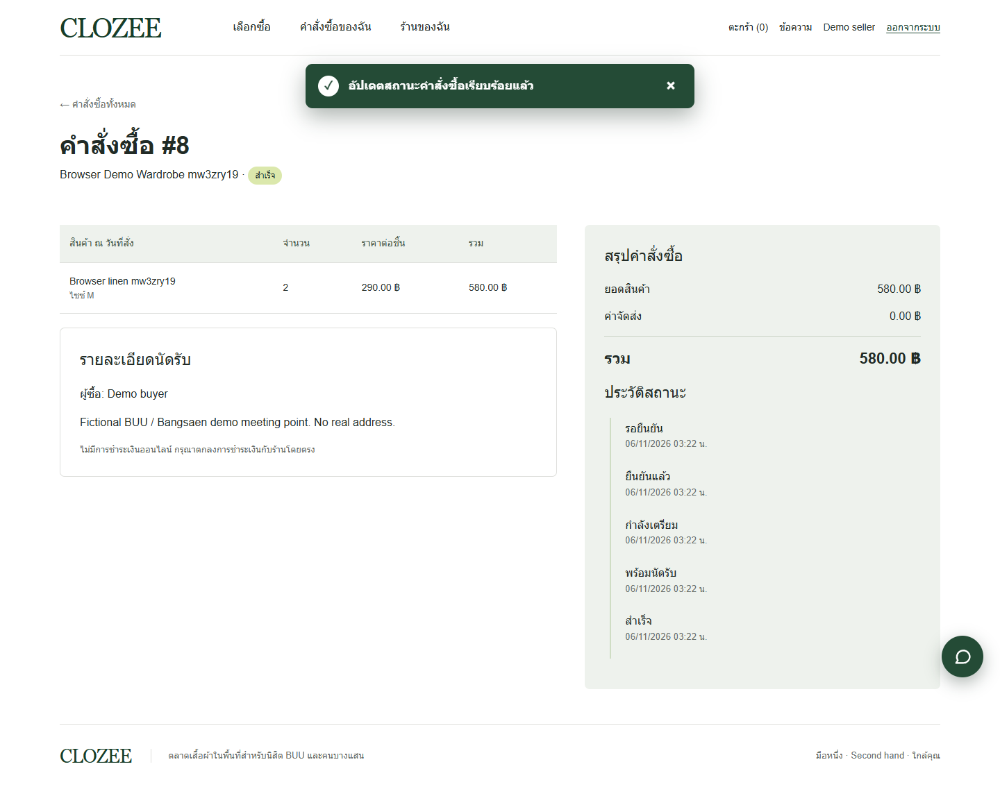
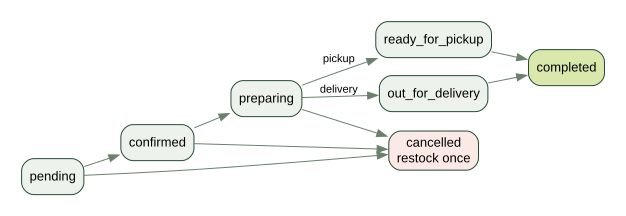
ร้านยกเลิกคำสั่งซื้อได้ก่อนถึงขั้นพร้อมรับหรือออกจัดส่ง และระบบจะคืนสต็อกเพียงครั้งเดียว คำสั่งซื้อที่เสร็จสิ้นหรือยกเลิกแล้วจะเปลี่ยนสถานะอีกไม่ได้
ผู้ใช้ที่เข้าสู่ระบบจะเห็นไอคอนแชทที่มุมขวาล่างของทุกหน้า กดเพื่อเปิดหรือปิดได้ และผู้ซื้อเริ่มแชทจากหน้าสินค้าเพื่อถามไซซ์หรือสภาพสินค้าได้ ดังภาพที่ 11 รายการแชทแสดงคนที่ทักล่าสุดไว้บนสุด สลับเรียงแชทใหม่สุดหรือเก่าสุดได้ และมีตัวเลขแจ้งแชทที่ยังไม่อ่าน
หน้าเว็บตรวจข้อความใหม่จากเซิร์ฟเวอร์ทุก 3 วินาทีระหว่างเปิดห้องแชท จึงไม่ต้องรีเฟรชหน้า ข้อความเห็นได้เฉพาะคู่สนทนาและแสดงล่าสุด 100 ข้อความ
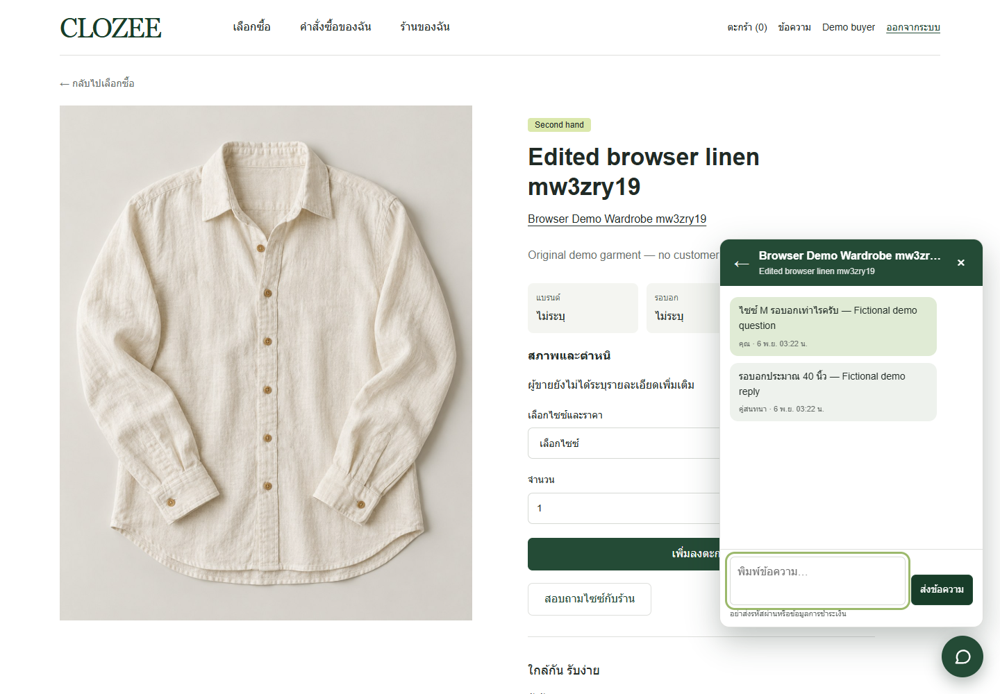
ผู้ขายอัปโหลดรูป JPG, PNG หรือ WebP ได้สูงสุด 4 รูป เลือกภาพหลักและลบภาพได้ และเพิ่มแบรนด์ รอบอก ความยาว และตำหนิได้ ดังภาพที่ 12 เบราว์เซอร์จะย่อรูปและแปลงเป็น PNG ไม่เกิน 1,600 พิกเซลและ 1.5 MiB จากนั้น PHP ตรวจไฟล์อีกครั้งก่อนบันทึกลงฐานข้อมูล
เนื่องจาก PHP บน Angsila ไม่มี GD และเขียนไฟล์ลงพื้นที่ส่วนตัวไม่ได้ ระบบจึงเก็บรูปในคอลัมน์ MEDIUMBLOB แทนการเก็บเป็นไฟล์
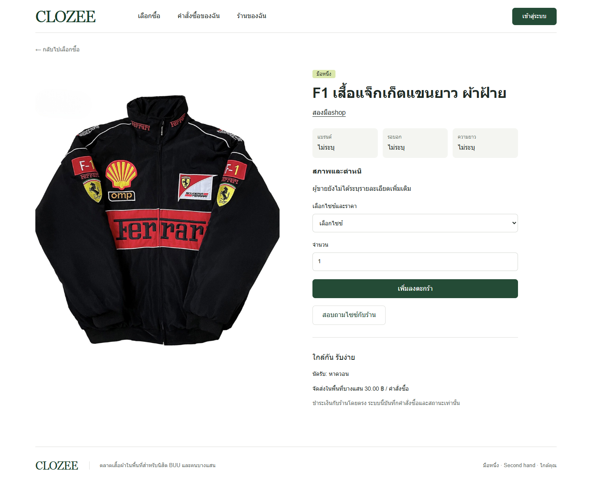
ตารางที่ 6 การทำ CRUD ของสินค้า
| การทำงาน | SQL | การทำงานในระบบ |
|---|---|---|
| Create | INSERT | เพิ่มสินค้าและไซซ์ใน Transaction เดียวกัน โดยใช้ร้านของผู้ที่เข้าสู่ระบบ |
| Read | SELECT | แสดงสินค้าในหน้าร้าน หน้ารายละเอียด และหน้าจัดการร้าน |
| Update | UPDATE | แก้ไขสินค้าและไซซ์ได้เฉพาะของร้านตนเอง โดยตรวจเลขรุ่นเพื่อกันการแก้สต็อกทับกัน |
| Delete | DELETE | ลบได้เฉพาะสินค้าที่ไม่มีประวัติการซื้อ ถ้ามีประวัติจะปฏิเสธและให้ปิดขายแทน |
ร้านค้าลบได้ที่หน้าข้อมูลร้าน โดยต้องพิมพ์ชื่อร้านให้ตรงเพื่อยืนยัน ระบบจะลบสินค้า รูป และแชทของร้านใน Transaction เดียวกัน แต่ถ้าร้านมีประวัติคำสั่งซื้อจะไม่ยอมให้ลบ เพื่อเก็บประวัติของผู้ซื้อ และให้ใช้การปิดร้านแทน
ฟังก์ชันสั่งซื้อล็อกข้อมูลตามลำดับ ผู้ซื้อ ร้าน สินค้า และไซซ์ ตรวจสต็อกอีกครั้ง แล้วจึงสร้างคำสั่งซื้อและตัดสต็อกพร้อมกัน เงินคำนวณเป็นจำนวนเต็มหน่วยสตางค์เพื่อเลี่ยงความคลาดเคลื่อนของทศนิยม ตัวอย่างโค้ดจาก app/services/OrderService.php มีดังนี้
$v=query('SELECT * FROM {{product_variants}} WHERE variant_id=? FOR UPDATE',[$id])->fetch();
...
$changed=query('UPDATE {{product_variants}} SET stock_quantity=stock_quantity-?,version=version+1 WHERE variant_id=? AND stock_quantity>=?',[$qty,$id,$qty])->rowCount();
if($changed!==1) throw new ValidationException('สต็อกเปลี่ยนแล้ว กรุณาลองใหม่');
ระบบใช้รหัสกันคำขอซ้ำ หากผู้ซื้อกดส่งซ้ำด้วยข้อมูลเดิมจะได้คำสั่งซื้อเดิมและไม่ตัดสต็อกซ้ำ นอกจากนี้ ตาราง order_items ยังเก็บชื่อ ไซซ์ และราคา ณ วันที่สั่ง ประวัติการซื้อจึงไม่เปลี่ยนเมื่อร้านแก้ไขสินค้าภายหลัง
ไฟล์ database/demo-joins.sql เก็บตัวอย่างคำสั่ง และผลลัพธ์ด้านล่างมาจากฐานข้อมูลทดสอบที่มีเฉพาะข้อมูลสมมติ
คำสั่งนี้รวมคำสั่งซื้อกับผู้ซื้อ ร้าน และรายการสินค้า จึงแสดงเฉพาะแถวที่จับคู่ได้ครบ
SELECT o.order_id,u.full_name AS buyer,s.shop_name,oi.product_name_snapshot,
oi.size_label_snapshot,oi.quantity,oi.unit_price,o.status
FROM orders o
INNER JOIN users u ON u.user_id=o.buyer_user_id
INNER JOIN shops s ON s.shop_id=o.shop_id
INNER JOIN order_items oi ON oi.order_id=o.order_id
ORDER BY o.order_id,oi.order_item_id;
ตารางที่ 7 ตัวอย่างผล INNER JOIN (บางส่วน)
| คำสั่งซื้อ | ผู้ซื้อ | ร้าน | สินค้า | จำนวน | ราคาต่อหน่วย |
|---|---|---|---|---|---|
| 1 | Demo buyer | Browser Demo Wardrobe mvuqxv5p | Browser linen mvuqxv5p | 2 | 290.00 |
| 2 | Demo buyer | Browser Demo Wardrobe mvuqypuh | Browser linen mvuqypuh | 2 | 290.00 |
| 3 | Demo buyer | Browser Demo Wardrobe mvuqypuh | Browser linen mvuqypuh | 1 | 290.00 |
คำสั่งนี้แสดงทุกร้าน รวมถึงร้านที่ยังไม่มีคำสั่งซื้อ และใช้ COUNT(o.order_id) เพราะ COUNT(*) จะนับแถว NULL ของร้านที่ไม่มีคำสั่งซื้อเป็น 1
SELECT s.shop_id,s.shop_name,COUNT(o.order_id) AS order_count
FROM shops s LEFT JOIN orders o ON o.shop_id=s.shop_id
GROUP BY s.shop_id,s.shop_name ORDER BY s.shop_id;
ตารางที่ 8 ตัวอย่างผล LEFT JOIN (บางส่วน)
| รหัสร้าน | ร้าน | จำนวนคำสั่งซื้อ |
|---|---|---|
| 1 | Bangsaen Closet | 0 |
| 2 | BUU Rewear | 0 |
| 3 | The Next Wardrobe | 0 |
| 4 | Browser Demo Wardrobe mvuqxv5p | 1 |
| 5 | Browser Demo Wardrobe mvuqypuh | 2 |
เนื่องจากหนึ่งคำสั่งซื้อมีได้หลายรายการ การรวม total_amount หลัง JOIN กับ order_items จะทำให้ยอดซ้ำ ระบบจึงไม่รวมยอดจากผลลัพธ์แบบนั้น
ตอนสมัครสมาชิก ระบบเก็บรหัสผ่านด้วย password_hash และตอนเข้าสู่ระบบตรวจด้วย password_verify เมื่อสำเร็จจะเปลี่ยน Session ID ด้วย session_regenerate_id(true) เพื่อป้องกัน Session Fixation ตัวอย่างโค้ดจาก app/auth/session.php มีดังนี้
$row=query('SELECT user_id,full_name,password_hash FROM {{users}} WHERE email=?',[$email])->fetch();
...
if (!password_verify($password,$row['password_hash']??$dummy)||!$row) {
การออกจากระบบใช้ POST พร้อม CSRF Token จากนั้นล้างข้อมูล Session ลบ Cookie และทำลาย Session และหากไม่มีการใช้งานเกิน 30 นาที Session จะถูกล้าง
ตารางที่ 9 ความเสี่ยงและวิธีป้องกัน
| ความเสี่ยง | วิธีป้องกัน |
|---|---|
| รหัสผ่านรั่ว | เก็บเฉพาะ Hash และไม่เก็บรหัสผ่านฐานข้อมูลใน GitHub |
| SQL Injection | ใช้ Prepared Statement ทุกคำสั่ง |
| XSS | Escape ข้อมูลด้วย htmlspecialchars และกำหนด Content Security Policy |
| CSRF | ทุกฟอร์มที่แก้ไขข้อมูลใช้ POST พร้อม Token |
| แก้ไขข้อมูลของผู้อื่น | ตรวจความเป็นเจ้าของจากผู้ใช้ใน Session |
| เดารหัสผ่าน | จำกัด 5 ครั้งต่อบัญชีและ IP และ 40 ครั้งต่อ IP ภายใน 15 นาที โดยเก็บเป็น Hash |
| ขโมย Session | Cookie ใช้ HttpOnly, SameSite=Lax และ Secure บน HTTPS |
| ไฟล์รูปปลอม | PHP ตรวจโครงสร้าง PNG ก่อนบันทึก และส่งรูปพร้อม nosniff |
การติดตั้งทำผ่าน VPN มหาวิทยาลัยด้วย phpMyAdmin และ FileZilla โดยตรวจปลายทางและแผน SQL ก่อนเขียนจริง ไฟล์หน้าเว็บอยู่ใน public_html/clozee ส่วนโค้ดภายในและไฟล์ตั้งค่าอยู่นอกเว็บ เนื่องจากฐานข้อมูลเดิมมีตาราง users ของงาน Lab อยู่แล้ว ตารางของ CLOZEE จึงใช้คำนำหน้า clozee_ และตาราง Lab เดิมทั้งห้าตารางยังอยู่ครบ
ก่อนเพิ่มระบบรูปสินค้าเมื่อวันที่ 4 พฤศจิกายน 2569 ได้สำรอง 10 ตารางและไฟล์เดิม 52 ไฟล์ หลังติดตั้งตรวจแล้วว่าข้อมูลเดิมไม่เปลี่ยน และไฟล์รุ่นใหม่ตรงกันทั้ง 47 ไฟล์
การอัปเดตวันที่ 6 พฤศจิกายน 2569 เพิ่มแชทลอย หน้าเว็บภาษาไทย การแจ้งเตือน และการลบร้าน โดยไม่แก้โครงสร้างฐานข้อมูล จึงอัปโหลดเฉพาะไฟล์ไปยังโฟลเดอร์รุ่นใหม่ และเก็บชุดไฟล์เดิมไว้สำหรับย้อนกลับ หน้าเว็บปัจจุบันแสดงดังภาพที่ 13 และภาพที่ 14
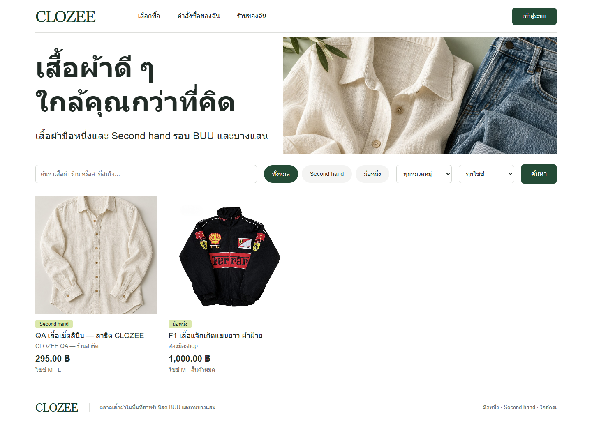
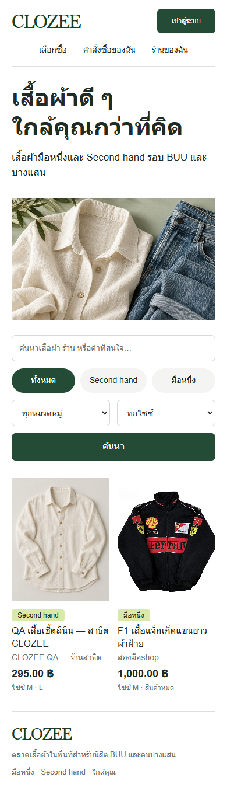
ซอร์สโค้ด README และประวัติการแก้ไขอยู่บน GitHub ฟีเจอร์รูปสินค้าพัฒนาบน Branch แยกแล้วรวมผ่าน Pull Request และ GitHub Actions ทดสอบโค้ดกับ MySQL โดยอัตโนมัติ ไฟล์ตั้งค่าส่วนตัวและรหัสผ่านถูกยกเว้นด้วย .gitignore
ผลด้านล่างแยกตามสภาพแวดล้อม เพราะการทดสอบในเครื่องไม่ได้ยืนยันผลบนเซิร์ฟเวอร์จริง
ตารางที่ 10 สรุปผลการทดสอบ
| ชุดทดสอบ | สภาพแวดล้อม | ผล |
|---|---|---|
| ระบบ ฐานข้อมูล และการทำงานพร้อมกัน | เครื่องพัฒนา PHP 8.4.27, MariaDB 11.4.9 | ผ่าน 62/62 ในแต่ละชุดชื่อตาราง |
| ตรวจไฟล์รูปภาพ | เครื่องพัฒนา ปิด GD/EXIF เหมือน Angsila | ผ่าน 23/23 |
| เบราว์เซอร์ ระบบหลัก แชท แจ้งเตือน และลบร้าน | เครื่องพัฒนา ปิด GD/EXIF | ผ่าน 26/26 |
| เบราว์เซอร์ รูปสินค้า | เครื่องพัฒนา ปิด GD/EXIF | ผ่าน 23/23 |
| อัปเกรดฐานข้อมูลจาก 10 ตาราง | เครื่องพัฒนา | ผ่าน 14/14 |
| ทุกชุดบน GitHub Actions รุ่นปัจจุบัน | PHP 8.3, MySQL 8.4 ทั้งเปิดและปิด GD/EXIF | ผ่านทุกงาน (commit cd08f6a ซึ่ง CI แสดงเป็นรหัสเดิม d6999f3 เพราะต่อมาแก้เฉพาะข้อความ commit โค้ดเหมือนเดิม) |
| ฟังก์ชันระบบหลักบนเว็บจริง รุ่นก่อนเพิ่มแชทลอย (30 ต.ค. 2569) | Angsila ผ่าน VPN | ผ่าน 30/30 |
| รูปสินค้าบนเว็บจริง รุ่นก่อนเพิ่มแชทลอย (4 พ.ย. 2569) | Angsila ผ่าน VPN | ผ่าน 13/13 |
| HTTP และความปลอดภัยบนเว็บจริง รุ่นปัจจุบัน (6 พ.ย. 2569) | Angsila ผ่าน VPN | ผ่าน 17/17 |
| แชทลอย แจ้งเตือน เรียงแชท และลบร้านบนเว็บจริง รุ่นปัจจุบัน (6 พ.ย. 2569) | Angsila ผ่าน VPN ทดสอบด้วยตนเองสองบัญชี | ผ่านครบ 5 รายการ |
ผล GitHub Actions ของรุ่นที่ติดตั้งดูได้ที่ run 42103903945 ส่วนรายละเอียดแต่ละข้ออยู่ใน docs/test-results.md
การทดสอบบนเว็บจริงใช้ข้อมูลสมมติทั้งหมด ครอบคลุมการสมัครสมาชิก การจัดการสินค้า นัดรับ จัดส่ง การยกเลิกพร้อมคืนสต็อก แชท และการปฏิเสธผู้ใช้ที่ไม่มีสิทธิ์ เมื่อทดสอบเสร็จได้ปิดร้านและสินค้าทดสอบของรอบรูปสินค้าแล้ว
การทดสอบการทำงานพร้อมกันใช้ PHP สองโปรเซสแย่งซื้อสินค้าชิ้นสุดท้าย ผลคือสำเร็จเพียงคำขอเดียวและสต็อกเหลือศูนย์ ส่วนการส่งคำขอซ้ำด้วยรหัสเดียวกันได้คำสั่งซื้อเดียวและตัดสต็อกครั้งเดียว
ตารางที่ 11 ผลเทียบกับวัตถุประสงค์
| วัตถุประสงค์ | ผลที่ได้ |
|---|---|
| ออกแบบฐานข้อมูลเชิงสัมพันธ์ | ทำได้ 11 ตาราง พร้อม Foreign Key, UNIQUE และ CHECK |
| เข้าสู่ระบบและตรวจสิทธิ์ | ทำได้ และทดสอบการปฏิเสธผู้ใช้ที่ไม่มีสิทธิ์แล้ว |
| CRUD กับ MySQL | ทำได้ ส่วนการลบจริงทดสอบบนฐานข้อมูลแยก |
| สั่งซื้อและติดตามสถานะ | ทำได้ ทั้งนัดรับและจัดส่ง |
| ติดตั้งบน Angsila | ทำได้ และทดสอบผ่าน VPN มหาวิทยาลัยแล้ว |
CLOZEE ทำงานได้ตามขอบเขตที่กำหนด และแสดงให้เห็นว่าการออกแบบฐานข้อมูลที่ดีช่วยรักษาความถูกต้องของสต็อกและประวัติการซื้อได้จริง
ตารางที่ 12 ลิงก์ที่ใช้ตรวจงาน
| รายการ | ลิงก์ |
|---|---|
| เว็บไซต์บน Angsila (ต้องเชื่อมต่อ VPN มหาวิทยาลัย) | https://angsila.informatics.buu.ac.th/~68160207/clozee/ |
| GitHub Repository | https://github.com/Skyce38/CLOZEE |
ฐานเดิมอ้าง information_schema บน MariaDB 11.4.9 และปรับตาม migration 002 ที่ติดตั้งจริงบน Angsila วันที่ 4 พฤศจิกายน 2569 รวม 11 ตาราง 89 คอลัมน์ 15 Foreign Keys และ 9 CHECK ชนิดตัวเลขอาจแสดง display width ต่างกันระหว่าง MariaDB/MySQL เวลาในฐานข้อมูลเป็น UTC ส่วน UI แปลงเป็นเวลาประเทศไทย
ตารางที่ 13 พจนานุกรมข้อมูลตาราง conversations
| Column | Type | NULL? | Default | Key / rule | Meaning |
|---|---|---|---|---|---|
| conversation_id | bigint(20) unsigned | NO | NULL | PRI; auto_increment | รหัสการสนทนา |
| buyer_user_id | bigint(20) unsigned | NO | NULL | MUL; FK → users.user_id | บัญชีผู้ซื้อ |
| shop_id | bigint(20) unsigned | NO | NULL | MUL; FK → shops.shop_id | รหัสร้าน |
| product_id | bigint(20) unsigned | YES | NULL | MUL; FK → products.product_id | รหัสสินค้า |
| created_at | timestamp | NO | current_timestamp() | - | เวลาสร้าง (UTC) |
| last_message_at | timestamp | YES | NULL | - | เวลาข้อความล่าสุด ใช้เรียง thread |
ตารางที่ 14 พจนานุกรมข้อมูลตาราง login_attempts
| Column | Type | NULL? | Default | Key / rule | Meaning |
|---|---|---|---|---|---|
| attempt_id | bigint(20) unsigned | NO | NULL | PRI; auto_increment | รหัสบันทึกการล็อกอินผิด |
| bucket | char(64) | NO | NULL | MUL | SHA-256 ของ IP + normalized email |
| ip_bucket | char(64) | NO | NULL | MUL | SHA-256 ของ IP เพื่อจำกัดการลองรวม |
| attempted_at | timestamp | NO | current_timestamp() | - | เวลา login ผิด เก็บชั่วคราว |
ตารางที่ 15 พจนานุกรมข้อมูลตาราง messages
| Column | Type | NULL? | Default | Key / rule | Meaning |
|---|---|---|---|---|---|
| message_id | bigint(20) unsigned | NO | NULL | PRI; auto_increment | รหัสข้อความ |
| conversation_id | bigint(20) unsigned | NO | NULL | MUL; FK → conversations.conversation_id | รหัสการสนทนา |
| sender_user_id | bigint(20) unsigned | NO | NULL | MUL; FK → users.user_id | ผู้ส่งจริงจาก session |
| message_text | text | NO | NULL | - | ข้อความล้วน 1–2000 ตัวอักษร Escape เมื่อแสดงผล |
| created_at | timestamp | NO | current_timestamp() | - | เวลาสร้าง (UTC) |
ตารางที่ 16 พจนานุกรมข้อมูลตาราง orders
| Column | Type | NULL? | Default | Key / rule | Meaning |
|---|---|---|---|---|---|
| order_id | bigint(20) unsigned | NO | NULL | PRI; auto_increment | รหัสคำสั่งซื้อ |
| buyer_user_id | bigint(20) unsigned | NO | NULL | MUL; FK → users.user_id | บัญชีผู้ซื้อ |
| shop_id | bigint(20) unsigned | NO | NULL | MUL; FK → shops.shop_id | รหัสร้าน |
| fulfillment_method | enum('pickup','delivery') | NO | NULL | - | pickup หรือ delivery |
| fulfillment_details | text | NO | NULL | - | สถานที่และรายละเอียดส่วนตัวที่ผู้ซื้อให้ร้าน |
| shipping_fee | decimal(10,2) | NO | 0.00 | - | ค่าจัดส่ง ณ เวลาสั่งซื้อ |
| total_amount | decimal(10,2) | NO | NULL | - | ผลรวมสินค้าและค่าจัดส่งจาก server |
| status | enum('pending','confirmed','preparing','ready_for_pickup','out_for_delivery','completed','cancelled') | NO | 'pending' | - | สถานะปัจจุบันตาม state machine |
| buyer_note | text | YES | NULL | - | หมายเหตุถึงร้าน |
| checkout_key | char(64) | NO | NULL | - | รหัสกันคำขอซ้ำ ไม่ซ้ำร่วมกับ buyer_user_id |
| request_hash | char(64) | NO | NULL | - | SHA-256 ของคำขอเพื่อป้องกันใช้ key เดิมกับข้อมูลอื่น |
| created_at | timestamp | NO | current_timestamp() | - | เวลาสร้าง (UTC) |
| updated_at | timestamp | NO | current_timestamp() | -; on update current_timestamp() | เวลาแก้ไขล่าสุด (UTC) |
ตารางที่ 17 พจนานุกรมข้อมูลตาราง order_items
| Column | Type | NULL? | Default | Key / rule | Meaning |
|---|---|---|---|---|---|
| order_item_id | bigint(20) unsigned | NO | NULL | PRI; auto_increment | รหัสรายการซื้อ |
| order_id | bigint(20) unsigned | NO | NULL | MUL; FK → orders.order_id | รหัสคำสั่งซื้อ |
| variant_id | bigint(20) unsigned | NO | NULL | MUL; FK → product_variants.variant_id | รหัสตัวเลือกไซซ์ |
| product_name_snapshot | varchar(180) | NO | NULL | - | ชื่อสินค้า ณ วันที่สั่ง |
| size_label_snapshot | varchar(50) | NO | NULL | - | ไซซ์ ณ วันที่สั่ง |
| quantity | int(10) unsigned | NO | NULL | - | จำนวน 1–99 |
| unit_price | decimal(10,2) | NO | NULL | - | ราคาต่อหน่วย ณ วันที่สั่ง |
ตารางที่ 18 พจนานุกรมข้อมูลตาราง order_status_history
| Column | Type | NULL? | Default | Key / rule | Meaning |
|---|---|---|---|---|---|
| history_id | bigint(20) unsigned | NO | NULL | PRI; auto_increment | รหัสประวัติสถานะ |
| order_id | bigint(20) unsigned | NO | NULL | MUL; FK → orders.order_id | รหัสคำสั่งซื้อ |
| actor_user_id | bigint(20) unsigned | NO | NULL | MUL; FK → users.user_id | ผู้สร้างคำสั่งซื้อหรือผู้เปลี่ยนสถานะ |
| from_status | varchar(30) | YES | NULL | - | สถานะเดิม NULL สำหรับการสร้างครั้งแรก |
| to_status | varchar(30) | NO | NULL | - | สถานะใหม่ |
| created_at | timestamp | NO | current_timestamp() | - | เวลาสร้าง (UTC) |
ตารางที่ 19 พจนานุกรมข้อมูลตาราง products
| Column | Type | NULL? | Default | Key / rule | Meaning |
|---|---|---|---|---|---|
| product_id | bigint(20) unsigned | NO | NULL | PRI; auto_increment | รหัสสินค้า |
| shop_id | bigint(20) unsigned | NO | NULL | MUL; FK → shops.shop_id | รหัสร้าน |
| product_name | varchar(180) | NO | NULL | - | ชื่อสินค้าในปัจจุบัน |
| description | text | YES | NULL | - | รายละเอียดร้านหรือสินค้า |
| category | varchar(80) | YES | NULL | - | หมวดหมู่จากรายการค่าที่อนุญาตใน PHP |
| condition_type | enum('new','secondhand') | NO | NULL | MUL | new หรือ secondhand |
| image_path | varchar(255) | YES | NULL | - | ชื่อภาพสาธิตที่อนุญาตในระบบ |
| is_active | tinyint(1) | NO | 1 | - | 1 เปิดใช้งาน / 0 ปิดใช้งาน |
| created_at | timestamp | NO | current_timestamp() | - | เวลาสร้าง (UTC) |
| updated_at | timestamp | NO | current_timestamp() | -; on update current_timestamp() | เวลาแก้ไขล่าสุด (UTC) |
| brand | varchar(100) | YES | NULL | - | แบรนด์ (ไม่บังคับ) |
| chest_cm | decimal(4,1) | YES | NULL | CHECK > 0 และ <= 300 | รอบอก ซม. |
| length_cm | decimal(4,1) | YES | NULL | CHECK > 0 และ <= 300 | ความยาว ซม. |
| condition_notes | varchar(1000) | YES | NULL | - | สภาพและตำหนิ |
ตารางที่ 20 พจนานุกรมข้อมูลตาราง product_images
| Column | Type | NULL? | Default | Key / rule | Meaning |
|---|---|---|---|---|---|
| image_id | bigint unsigned | NO | NULL | PRI; auto_increment | รหัสรูป |
| product_id | bigint unsigned | NO | NULL | FK → products.product_id; ON DELETE CASCADE | สินค้าเจ้าของรูป |
| storage_name | varchar(64) | NO | NULL | UNIQUE | รหัสสุ่ม ไม่ใช่ path ไฟล์ |
| mime_type | varchar(32) | NO | NULL | server allowlist | MIME รูป; รูปใหม่เป็น image/png |
| byte_size | int unsigned | NO | NULL | CHECK 1..1572864 และเท่ากับ OCTET_LENGTH(image_data) | ขนาดไบต์จริง |
| image_data | mediumblob | NO | NULL | CHECK ขนาดร่วมกับ byte_size | ข้อมูลภาพ binary ที่ตรวจแล้ว |
| width | smallint unsigned | NO | NULL | CHECK 1..1600 | ความกว้างพิกเซล |
| height | smallint unsigned | NO | NULL | CHECK 1..1600 | ความสูงพิกเซล |
| sort_order | tinyint unsigned | NO | 0 | composite index product_id,sort_order,image_id | ลำดับภาพ; ลำดับแรกเป็นปก |
| created_at | timestamp | NO | CURRENT_TIMESTAMP | - | เวลาสร้าง UTC |
ตารางที่ 21 พจนานุกรมข้อมูลตาราง product_variants
| Column | Type | NULL? | Default | Key / rule | Meaning |
|---|---|---|---|---|---|
| variant_id | bigint(20) unsigned | NO | NULL | PRI; auto_increment | รหัสตัวเลือกไซซ์ |
| product_id | bigint(20) unsigned | NO | NULL | MUL; FK → products.product_id | รหัสสินค้า |
| size_label | varchar(50) | NO | NULL | - | ไซซ์ ตัวพิมพ์ใหญ่และไม่ซ้ำต่อสินค้า |
| price | decimal(10,2) | NO | NULL | - | ราคาต่อหน่วย DECIMAL; PHP คำนวณเป็นสตางค์ |
| stock_quantity | int(10) unsigned | NO | 0 | - | จำนวนพร้อมขาย 0–999999 |
| version | int(10) unsigned | NO | 1 | - | เลขรุ่นสำหรับป้องกันการแก้สต็อกทับกัน |
| is_active | tinyint(1) | NO | 1 | - | 1 เปิดใช้งาน / 0 ปิดใช้งาน |
| created_at | timestamp | NO | current_timestamp() | - | เวลาสร้าง (UTC) |
| updated_at | timestamp | NO | current_timestamp() | -; on update current_timestamp() | เวลาแก้ไขล่าสุด (UTC) |
ตารางที่ 22 พจนานุกรมข้อมูลตาราง shops
| Column | Type | NULL? | Default | Key / rule | Meaning |
|---|---|---|---|---|---|
| shop_id | bigint(20) unsigned | NO | NULL | PRI; auto_increment | รหัสร้าน |
| owner_user_id | bigint(20) unsigned | NO | NULL | UNI; FK → users.user_id | เจ้าของร้าน หนึ่งร้านต่อบัญชี |
| shop_name | varchar(150) | NO | NULL | - | ชื่อร้าน |
| description | text | YES | NULL | - | รายละเอียดร้านหรือสินค้า |
| pickup_location | varchar(255) | YES | NULL | - | จุดนัดรับที่ร้านระบุ |
| is_active | tinyint(1) | NO | 1 | - | 1 เปิดใช้งาน / 0 ปิดใช้งาน |
| created_at | timestamp | NO | current_timestamp() | - | เวลาสร้าง (UTC) |
| updated_at | timestamp | NO | current_timestamp() | -; on update current_timestamp() | เวลาแก้ไขล่าสุด (UTC) |
ตารางที่ 23 พจนานุกรมข้อมูลตาราง users
| Column | Type | NULL? | Default | Key / rule | Meaning |
|---|---|---|---|---|---|
| user_id | bigint(20) unsigned | NO | NULL | PRI; auto_increment | รหัสบัญชีผู้ใช้ |
| full_name | varchar(120) | NO | NULL | - | ชื่อแสดงผล |
| varchar(190) | NO | NULL | UNI | อีเมลไม่ซ้ำ ปรับเป็นตัวพิมพ์เล็กใน PHP | |
| password_hash | varchar(255) | NO | NULL | - | รหัสผ่านที่ผ่าน password_hash เท่านั้น |
| phone | varchar(30) | YES | NULL | - | เบอร์โทร (optional; ปัจจุบันไม่ใช้ในฟอร์ม) |
| created_at | timestamp | NO | current_timestamp() | - | เวลาสร้าง (UTC) |
| updated_at | timestamp | NO | current_timestamp() | -; on update current_timestamp() | เวลาแก้ไขล่าสุด (UTC) |
ตารางที่ 24 ข้อจำกัดความไม่ซ้ำของข้อมูล
| Table | Index | Columns |
|---|---|---|
| conversations | PRIMARY | conversation_id |
| login_attempts | PRIMARY | attempt_id |
| messages | PRIMARY | message_id |
| orders | PRIMARY | order_id |
| orders | uq_order_checkout | buyer_user_id,checkout_key |
| order_items | PRIMARY | order_item_id |
| order_items | uq_order_variant | order_id,variant_id |
| order_status_history | PRIMARY | history_id |
| products | PRIMARY | product_id |
| product_images | PRIMARY | image_id |
| product_images | ux_product_images_storage | storage_name |
| product_variants | PRIMARY | variant_id |
| product_variants | uq_variants_product_size | product_id,size_label |
| shops | PRIMARY | shop_id |
| shops | uq_shops_owner | owner_user_id |
| users | PRIMARY | user_id |
| users | uq_users_email |
ทุก order item ต้องอยู่ในร้านของ order, ผู้ส่งแชทต้องเป็นผู้ร่วมสนทนา, สินค้าต้องมีอย่างน้อยหนึ่ง variant, order ต้องมีอย่างน้อยหนึ่ง item, สต็อกต้องไม่ถูกขายเกิน, state transition ต้องตรงวิธีรับสินค้า และราคาต้องมาจาก server ดู implementation-decisions.md สำหรับ CHECK และ business rules ฉบับเต็ม
รูปสินค้าไม่เกิน 4 รูปต่อสินค้า บังคับใน service ภายใต้ row lock ของสินค้า; image endpoint ตรวจสถานะสินค้า/ร้านและสิทธิ์เจ้าของก่อนส่ง bytes ไม่ดึง BLOB ในรายการสินค้าทุกแถว